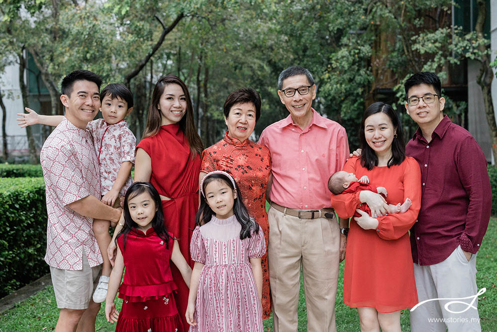

Vocabulary and structures to talk about her daughter, the boyfriend, and family life — her single most-used real-life topic. Grammar focus: possessives + have/has, used throughout every task below.
This is the grammar every other task in this lesson uses — so we drill it first, fast, before it shows up everywhere else.
Click a pronoun on the left, then its matching possessive on the right (e.g. "she" → "her").
Read the cue out loud, then she says the full sentence with correct have/has — no writing, no flipping until she's answered. Flip only to check.
Say the sentence, then say it again with the new person in brackets — out loud, back and forth, no pausing to think between them.
Say the word out loud as you flip each card. Click "Listen" to hear it pronounced before she tries it.
Five words from this lesson that are commonly mispronounced. Bold = stressed syllable. Click the purple button to hear it, then she repeats it three times.
Tongue twister (read it together, then she tries it alone — three times, a little faster each time)
Use the family photos below. She describes who's who: "This is my daughter. This is her boyfriend." Push for one extra detail each time ("What's he like? What are they doing?").

You describe a person using this lesson's vocabulary ("He is tall and funny. He works as an engineer.") — she guesses who. Then reverse roles: she describes, you guess.
Read each mini-scenario aloud together, then she answers out loud before clicking. This checks she can actually reason about relationships in English, not just recite words.
Click the word chips in the correct order to build each sentence, then hit Check. Say the finished sentence out loud before moving to the next one.
A phone call home — reinforces almost every word from today's vocabulary list.
Write 5 sentences describing the boyfriend using today's vocabulary, then record herself saying them out loud.